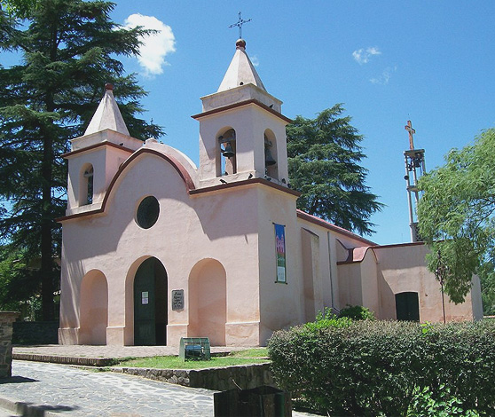

Lugares de Interes
El entorno invita a realizar actividades al aire libre que proporcionan bienestar y salud, rincones para vivir con adrenalina y actividades de turismo aventura, caminatas y cabalgatas guiadas reconociendo la flora y la fauna de las sierras de córdoba. Alquiler de bicicletas, cuadriciclos o motos, prácticas de buceo, pesca, tirolesa, rappel, escalada, travesías en vehículos 4x4 son algunas de las opciones.
La Cumbrecita & Villa General Belgrano
La Cumbrecita se encuentra enclavada en las Sierras Grandes, entre los ríos Almbach y del Medio, con una población estable de 370 personas aproximadamente, siendo además con sus 1450 m. s/n del mar, la población turística más alta de la provincia. En las cercanías se erige el cerro Champaquí de casi 3000 metros de altura; deleite de escaladores en cualquier época. Su clima es muy benigno y saludable, con días cálidos y noches frescas en verano, además llueve con frecuencia, después de la puesta del sol. El invierno es seco y frío, con buen sol casi todos días y nevadas de hasta 50 cm. de espesor. La Cumbrecita es el lugar ideal para gozar de verdaderas vacaciones en contacto con la naturaleza; en ese sentido se fue estructurando toda la oferta turística que se le brinda al visitante. Intentamos convertir a La cumbrecita en el primer PUEBLO PEATONAL del país; quienes nos visiten tienen a su disposición, en caso de algún impedimento físico, transporte gratuito en vehículos eléctricos adaptados especialmente para ese fin.

Museo de Arte Religioso Capilla Vieja, La calera
La Capilla Vieja fue construida en el año 1727 por la Compañía de Jesús. Ubicada dentro del predio de la estancia La Calera (propiedad de los jesuitas) contribuyó a la explotación de las riquezas naturales de cal que se necesitaba para la edificación de las obras de la ciudad.

Embalse Río Tercero
El gran Lago que conforma el majestuoso Embalse Río Tercero es uno de los más grandes de la Provincia de Córdoba. Sus 5.600 hectáreas de superficie reciben las aguas de los ríos Santa Rosa, Grande, Amboy, Quilinzo y La Cruz, todos vienen deslizándose desde las Sierras Grandes. Se sabe que su piedra fundacional se colocó en 1911 y que surgió gracias a un proyecto de una empresa inglesa. Esta construcción se terminó de realizar entre 1928 y 1936 por los ingenieros Alba Posse y Fiz Simón.

Cerro de la Virgen y Pico Alemán
Sobre el cordón de las Sierras Chicas, estos dos picos ofrecen la posibilidad de un ascenso a pie, para acceder a una hermosa vista panorámica del pueblo y del valle. En el cordón de las Sierras Chicas, sobre la Ruta Nº 5, se encuentran dos picos a los que se puede llegar caminando, accediendo a las mejores vistas panorámicas de Villa General Belgrano y del Valle de Calamuchita. Se trata del Cerro de la Virgen, a 1250 m.s.n.m y el Pico Alemán, ubicado unos metros más adelante. El ascenso es de 1700 mts. desde la base a Cerro de La Virgen hasta la cima. A esto debe sumarse el descenso, lo que implica que el recorrido total sea de 3400 mts. La base del cerro está a 820 m.s.n.m, y la cumbre a 1250 m.s.n.m. lo que implica un ascenso de 430 metros de diferencia. El tiempo de ascenso es de 45 a 50 min. con pendientes de hasta 45º. Para realizar este itinerario se debe tener en cuenta la topografía del sector. Cómo llegar: Sobre la ruta, a 300 metros hacia el sur de la entrada principal de Villa General Belgrano, se encuentra la entrada al paseo y un pequeño sendero que conduce a la cumbre de las sierras. Sólo se puede acceder a pie, y se llega luego de 45 minutos de caminata constante. Luego de un ascenso de 430 mts. se puede apreciar una vista panorámica de Villa General Belgrano y el resto del Valle de Calamuchita, destacando las Sierras Grandes y los espejos de agua de los diques Los Molinos y Embalse de Río Tercero. Recomendaciones: Se debe ir con calzado cómodo pero no con hojotas, alpargatas ni sandalias. Preferentemente zapatillas o calzado con agarre al terreno y sostén de tobillo en lo posible. Siempre se debe tener en cuenta los horarios y las temperaturas que en algunas ocasiones superan los 30º C. Es recomendable hacerlo entre las 9 y las 13 hs. o bien por la tarde, desde las 18 hs. La permanencia nocturna es peligrosa en el área por ello se debe bajar en horarios de luz diurna antes de las 21:30 hs. Llevar gorra o sombrero y mucha agua, ya que no existen vertientes en el trayecto del sendero.